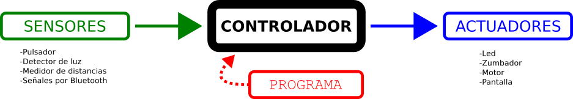
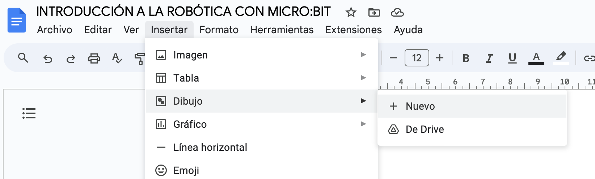
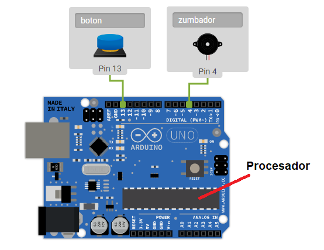
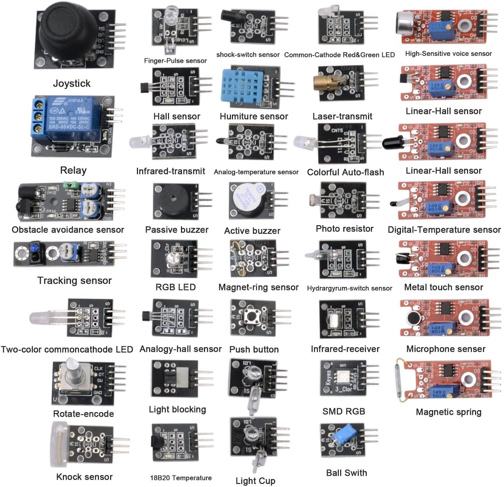
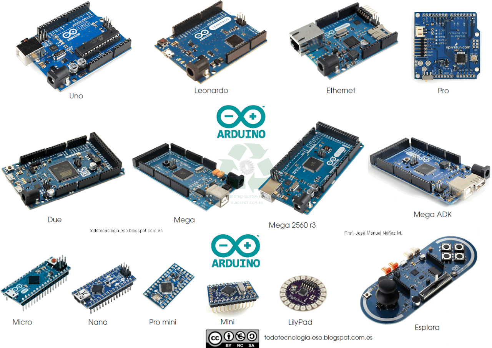
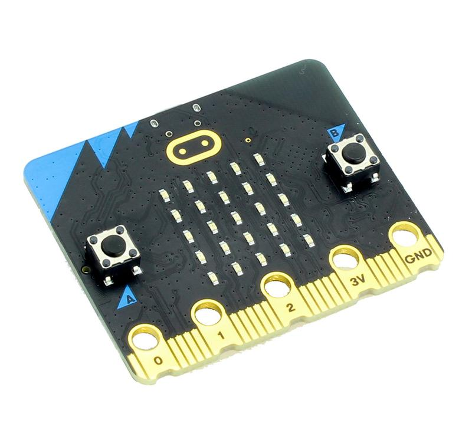
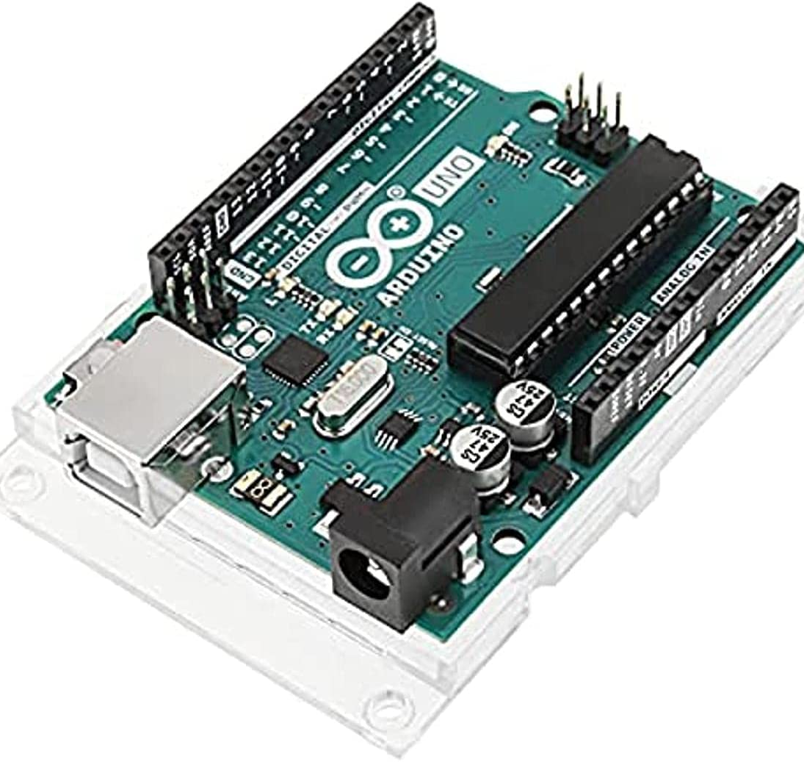

Como vimos en el apartado anterior, un robot recoge información del medio físico que le rodea (temperatura, luz, sonido, movimiento, etc.). Esto lo realiza mediante unos componentes electrónicos llamados "sensores".
Dependiendo de los parámetros que reciba de su entorno a través de los sensores, puede realizar ciertas acciones (moverse, encender luces, emitir sonidos, etc.). Esto lo puede realizar mediante otro tipo de componentes electrónicos llamados "actuadores".
El "cerebro" del robot, el que decide lo que tiene que hacer al consultar los sensores es una placa electrónica llamada "controlador" , que contiene el programa que tiene que ejecutar en todo momento, que previamente lo ha introducido un programador. El programa puede ser cambiado para cambiar el funcionamiento del robot cuantas veces se quiera.
En esta imagen tienes un esquema de cómo funciona básicamente un robot: los sensores le permiten detectar su entorno, el controlador le permite tomar decisiones sobe qué acciones hacer y los actuadores le permiten llevar a cabo las acciones que haya decidido.

TAREA 2
Imagina que montamos un sistema robótico súper simple, que consiste en:
Un pulsador como sensor.
Una tarjeta controladora.
Un zumbador como actuador.
El programa de este "robot" sería simplemente lo siguiente:
"Cuando alguien pulse el pulsador, haz sonar el zumbador durante 5 segundos"
Responde a las siguientes cuestiones en tu hoja de respuesta de Google Classroom:
1 - Realiza un esquema de ese robot (sería igual que el que aparece en la sección anterior, pero poniendo "pulsador" y "zumbador" en vez de "sensores" y "actuadores"). Intenta utilizar las herramientas de dibujo de los Documentos de Google para hacer el esquema directamente en tu ordenador. Solo tienes que darle a insertar un dibujo nuevo y te aparecerá el editor de dibujos, donde puedes añadir recuadros, flechas y texto de forma fácil.

2 - ¿Para qué se podría utilizar este circuito?
3 - Intenta proponer otro programa que se podría meter en este circuito para que funcione de otra manera.
Hardware y software
Hemos visto que para hacer funcionar un robot hacen falta varias cosas, algunas son tangibles como los sensores, la placa controladora y los actuadores y otras son intangibles como los programas y los datos. A las partes físicas y tangibles del robot (que se pueden tocar) se les llama hardware, mientras que las instrucciones lógicas, que no tienen una existencia física que puedas tocar, se le llama software. Por consiguiente:
Hardware:conjunto de los sensores, la placa controladora y los actuadores del robot.
Software: son los programas que controlan el robot, que se encuentran alojados en la memoria del controlador.
Programamos el software en un ordenador y se lo transmitimos al controlador a través de un cable; de esta forma, el controlador sabe lo que tiene que hacer en cada momento.
A veces, el robot no actúa como nosotros pensábamos, luego tendremos que revisar el programa, volver a transmitirlo a la controladora y volver a probar su funcionamiento en el robot. A este proceso se le llama "depurar" un programa.
La placa controladora tiene un microchip llamado "procesador", que se encarga de leer y ejecutar cada línea del programa que hemos introducido en la memoria de la placa. Además, el procesador se encarga de leer los datos de los sensores y de controlar los actuadores conectados a la placa.
Ejemplo: En este dibujo podemos ver una placa controladora Arduino UNO con un botón y un zumbador conectados a la misma.
Dentro de su procesador se almacena el programa que previamente hemos escrito en el ordenador y le hemos enviado a la placa mediante un cable USB.
Siguiendo el ejemplo de la tarea anterior, al presionar el pulsador, sonará el zumbador durante 5 segundos.
En cualquier momento, podemos modificar el programa para hacer que funcione de otra manera, por ejemplo, que al presionar el botón, el zumbador suene durante 2 segundos en lugar de 5, o que suene varias veces seguidas, tenemos libertad para hacer lo que queramos.
Ejemplos de sensores y actuadores
Existen muchos tipos de sensores y actuadores. Con un poco de imaginación podemos combinar los sensores y actuadores para construir proyectos interesantes.
Algunos ejemplos de sensores y actuadores que se pueden conectar a una placa controladora son los siguientes:

Sensores
Sensor de temperatura
Sensor de humedad
Sensor de luz
Sensor de sonido
Sensor de gas
Sensor de presión
Sensor de movimiento
Sensor de distancia
Actuadores
Motores
Luces (LEDs)
Relés
Pantallas
Altavoces
Ejemplos de placas controladoras
Actualmente, la placa controladora más famosa es Arduino, que fue inventada por un estudiante italiano en el año 2005. Es un sistema abierto (tanto el hardware como el software se pueden copiar libremente), por lo que existen multitud de clones de diferentes precios (y calidad). Esto hace que sea utilizado por millones de personas en todo el mundo, tanto para productos profesionales como para proyectos personales.
Existen varios modelos de placas Arduino con diferentes especificaciones, todas ellas sencillas de usar y a precios muy asequibles, por lo que son ideales para la enseñanza.

También existen otros muchos tipos de placas controladoras, pero las que utilizaremos nosotros en Computación y Robóticason las siguientes:
Micro:bit
La utilizamos en Computación y Robótica en 1º y 2º de ESO

Arduino UNO (o compatibles)
La utilizamos en Computación y Robótica en 2º y 3º de ESO

TAREA 3 - Responde a las preguntas
Responde a las siguiente cuestiones en tu hoja de respuestas de Google Classroom:
¿Qué son los sensores de un robot?
¿Qué son los actuadores de un robot?
¿Qué función tiene la controladora en un robot?
¿Qué es el hardware de un robot?
¿Qué es el software de un robot?
Elige un sensor y un actuador de los ejemplos de la sección anterior y describe un sistema robótico con los mismos. Para ello:
Dibuja un esquema como el que hiciste en la tarea 2, pero con los nombres de los elementos que hayas elegido.
Escribe el programa que meterías en la controladora.
Tipos de robots
Actualmente estamos rodeados de robots sin saberlo, como hemos visto antes, no todos los robots tienen forma de humano:
Podemos clasificar los robots en dos grupos:
Los robots industriales:se utilizan en la fabricación de objetos, en tareas como la soldadura, pintura, unión de piezas, manejo de materias peligrosas, etc. Suelen tener forma de brazos articulados.
Los robots de servicio:se utilizan para ayudar directamente a las personas, con fines médicos, militares, para entretener, para hacer tareas del hogar, etc.
Aplicaciones de los robots
Como hemos visto antes, los robots se utilizan en diversos lugares y además, están siendo introducidos en otros nuevos, como en los coches.
Las principales aplicaciones de los robots son:
Industria
Transporte de materiales
Montaje
Corte mecánico, rectificado, desbardado y pulido
Pintura
Manipulación de plásticos y otros materiales
Tareas peligrosas como soldaduras, implementación de sustancias inhalantes nocivas, transporte de materiales pesados.
Reciclaje
Medición, inspección, control de calidad
Servicios
Transporte robotizado
Limpieza
Atención a usuarios
Entretenimiento
Vigilancia
Domótica
Medicina
Cirugía asistida
Telecirugía
Prótesis motorizadas
Otros ámbitos
Exploración espacial
Exploración del fondo de los océanos
Desactivación de artefactos explosivos
Inspección de red de saneamiento
Agricultura robotizada
Ventajas e inconvenientes de los robots
Como hemos dicho al principio de este tema, estamos entrando en la "era de los robots", y como todo cambio, tiene defensores y detractores.
Vamos a analizar brevemente las ventajas e inconvenientes de los robots en la sociedad:
Ventajas
Capacidad de realizar trabajos complejos y/o peligrosos con precisión.
Mayor velocidad en la realización de las tareas sin cansarse.
Se pueden adaptar a nuevos trabajos y/o situaciones cambiando el programa que los gobierna.
Inconvenientes
Sustituyen a las personas, quitándoles el puesto de trabajo.
Son muy caros y solo se los pueden permitir las grandes empresas
Pueden ser hackeados para que funcionen mal.
TAREA 4 - Responde a las preguntas
Responde a las siguientes preguntas en tu hoja de respuesta de Google Classroom. No te limites a copiar y pegar las respuestas tal cual, intenta siempre aportar algo por tu cuenta.
¿Qué aplicaciones tienen los robots industriales?
¿Qué aplicaciones tienen los robots de servicios?
¿Qué aplicaciones tienen los robots médicos?
¿En qué otros ámbitos se utilizan los robots?
¿Qué ventajas tiene el uso de los robots? Añade alguna que no venga en el tema.
¿Qué inconvenientes tiene el uso de los robots? Añade alguno que no venga en el tema.